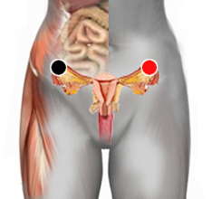

Parvovirus
Par
trompa - trompa

Generalidades:
Virus ADN. Primera causa de infertilidad. Irritabilidad, produce sangrado que se acumula en el útero y que se considera como mioma cuando en realidad es sólo un coagulo. Presente en la formación de tumores en la pelvis: Miomas, fibromas, quistes falsos.
Existen muchos tipos de parvovirus, todos ellos son virus minúsculos de extrema simplicidad que se replican dentro del núcleo celular del huesped, muchas veces con ayuda de otro virus. El Parpovirus B19 unicamente infecta a humanos. En los niños se presenta con erupciones en la piel, en especial en las mejillas y manifestaciones parecidas al catarro, remite entre 7 a 10 días sin mayor complicación. Es más peligroso en pacientes inmunodeprimidos, con alteraciones en la sangre y mujeres embarazadas que lo pueden transmitir al feto.
Transmisión
Entre humanos, posiblemente por contacto con animales (preguntar).